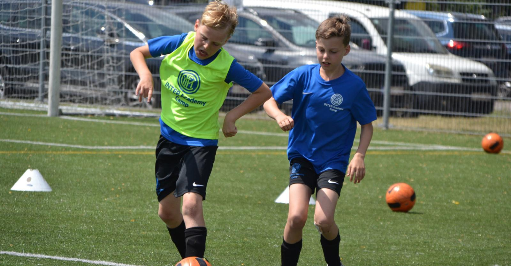

Inter Milaan's Toekomst
Inter Milaan, een club die bekend staat om zijn rijke geschiedenis en internationale successen, heeft niet alleen oog voor het heden maar investeert ook in de toekomst door middel van een bloeiende jeugdopleiding. Het ontwikkelen van jong talent is niet alleen een verplichting, maar ook een passie voor Inter, dat streeft naar een duurzame erfenis van succes.
De jeugdacademie van Inter Milaan, bekend als La Masia Nerazzurra, is de broedplaats waar talentvolle jonge voetballers de kans krijgen om hun vaardigheden te ontwikkelen en te schitteren. Vanaf een jonge leeftijd worden spelers ondergedompeld in een professionele omgeving waarin voetbalvaardigheden worden gekoppeld aan normen van discipline en toewijding.
Bij Inter Milaan gaat het niet alleen om het smeden van voetballers, maar ook om het vormgeven van verantwoordelijke individuen. Naast intensieve voetbaltrainingen krijgen de jonge talenten ook educatieve ondersteuning om een gebalanceerd ontwikkelingspad te waarborgen. Inter hecht waarde aan het vormen van atleten met zowel mentale als fysieke kracht.

Het ontdekken van ruwe diamanten is een kunst op zich, en de scoutingafdeling van Inter Milaan blinkt uit in het vinden van veelbelovende jonge talenten. Deze getalenteerde spelers worden zorgvuldig geselecteerd en geïntegreerd in het jeugdsysteem, waar ze de kans krijgen om hun potentieel te ontplooien onder begeleiding van ervaren coaches.
Een cruciaal aspect van het jeugdprogramma van Inter is de mogelijkheid voor getalenteerde spelers om door te groeien naar het eerste team. De club heeft in het verleden met trots jonge talenten geïntroduceerd die zijn doorgebroken en een blijvende impact hebben gehad, wat de vruchten van de jeugdopleiding benadrukt.
Inter Milaan begrijpt dat blootstelling aan internationaal niveau een essentieel onderdeel is van de ontwikkeling van jonge spelers. De jeugdteams van Inter nemen deel aan prestigieuze internationale competities, waardoor ze worden blootgesteld aan verschillende speelstijlen en hen de kans geven om te concurreren met hun leeftijdsgenoten over de hele wereld.
Inter Milaan ziet de jeugd niet alleen als toekomstige spelers, maar ook als een integraal onderdeel van de gemeenschap. Het betrekken van jonge fans en het bevorderen van gezondheid en sociale waarden via voetbal zijn even belangrijke doelen voor de jeugdafdeling van Inter.
Terwijl de seniorploeg van Inter Milaan schittert op de grote podia, vormt de jeugdopleiding de bouwstenen voor een duurzame toekomst. Met een toewijding aan talentontwikkeling en een holistische benadering van de groei van jonge voetballers, blijft Inter investeren in de beloftevolle generaties die de club zullen vertegenwoordigen en haar erfenis zullen voortzetten. De jeugd van Inter is niet alleen de toekomst van de club; het is de belofte van blijvend succes.